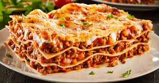

Lasagna is a wide, flat sheet of pasta. Lasagna can refer to either the type of noodle or to the typical lasagna dish which is a dish made with several layers of lasagna sheets with sauce and other ingredients, such as meats and cheese, in between the lasagna noodles.
Originally, the word lasagna was used to describe a pot in which food was being cooked rather than the pasta itself. Lasagna recipes have been around for ages, dating back to as early as the thirteenth century. Today, lasagnas come in all kinds of varieties from veggies and cream sauces to traditional sauce and cheese lasagnas as well as meat lasagnas.